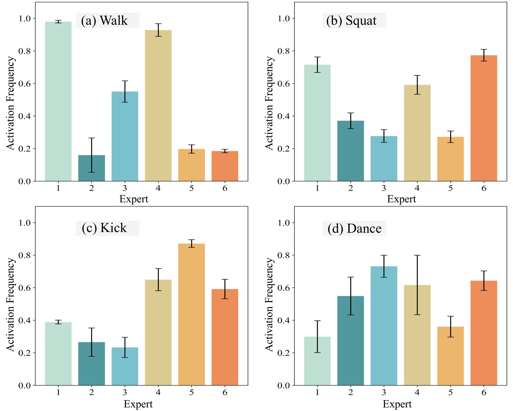
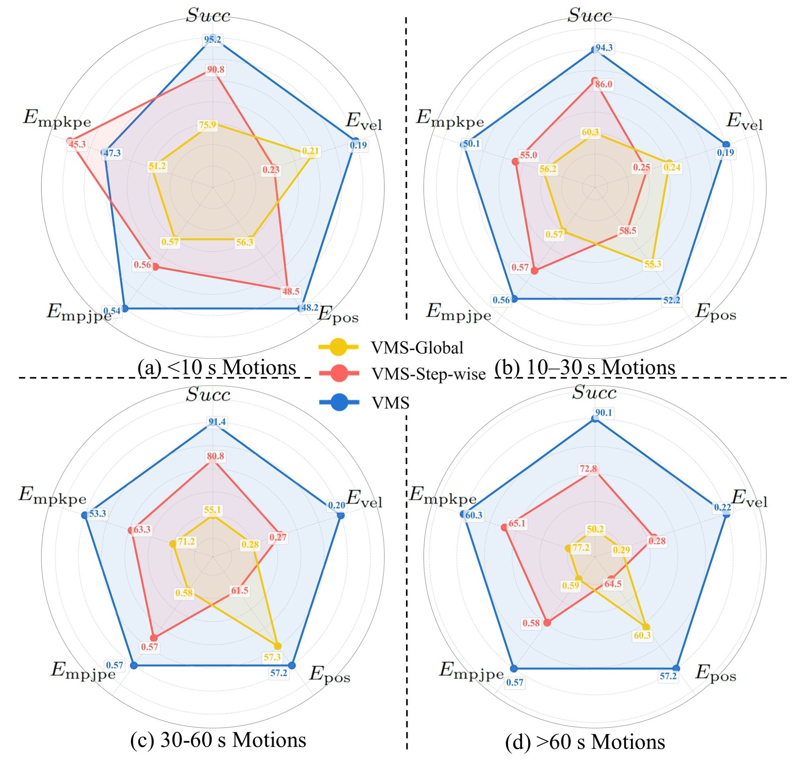
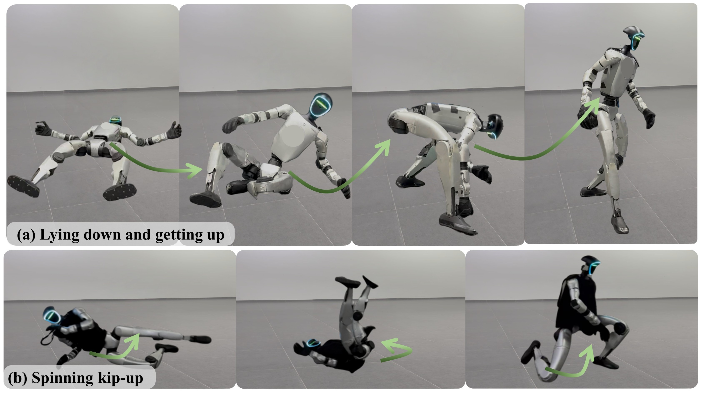

Learning versatile whole-body skills by tracking various human motions is a fundamental step toward general-purpose humanoid robots. This task is particularly challenging because a single policy must master a broad repertoire of motion skills while ensuring stability over long-horizon sequences. To this end, we present VMS, a unified whole-body controller that enables humanoid robots to learn diverse and dynamic behaviors within a single policy. Our framework integrates a hybrid tracking objective that balances local motion fidelity with global trajectory consistency, and an Orthogonal Mixture-of-Experts (OMoE) architecture that encourages skill specialization while enhancing generalization across motions. A segment-level tracking reward is further introduced to relax rigid step-wise matching, enhancing robustness when handling global displacements and transient inaccuracies. We validate VMS extensively in both simulation and real-world experiments, demonstrating accurate imitation of dynamic skills, stable performance over minute-long sequences, and strong generalization to unseen motions. These results highlight the potential of VMS as a scalable foundation for versatile humanoid whole-body control.
VMS outperforms ExBody2 and GMT across all metrics, achieving more accurate local tracking while effectively controlling global root positions. Unlike prior methods that rely on root velocity and suffer from global drift, VMS reduces both global and local errors, demonstrating superior accuracy and stability.
OMoE outperforms standard MoE and MLP baselines, achieving lower tracking errors and better generalization. Its orthogonalized experts learn distinct skill subspaces, enabling efficient specialization and flexible composition across diverse motion types.
VMS adapts expert usage to motion complexity—repetitive motions like walking activate few experts, variable motions like dancing engage many, and intermediate motions show distinct patterns—demonstrating efficient specialization and flexible skill composition.
We visualize representative motions with global targets (yellow) and local tracking targets (red). In a fast run with a sharp turn, global tracking fails due to accumulated errors, and step-wise tracking collapses during the turn. For a side kick, global tracking overemphasizes height and falls, while step-wise tracking loses balance. VMS, using a short future window, achieves smoother transitions, preserves motion style, and maintains overall stability.
Test motions grouped by duration show that baseline strategies degrade on longer motions, while VMS remains robust, maintaining strong performance across long-horizon tasks.
VMS demonstrates strong generalization across downstream applications. It can track text-to-motion instructions generated from natural language, enabling it to serve as a universal low-level controller for high-level planners.
Moreover, with minimal finetuning, VMS adapts to extreme out-of-distribution skills, including acrobatic and collision-prone motions, showing its practicality for edge cases.
